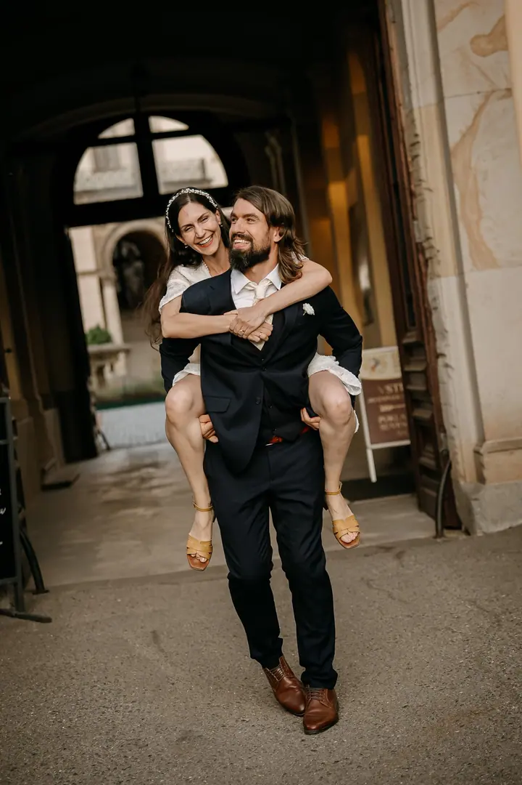

jedna
Svatby & elopement
Fotím svatby ve dvou na louce nebo v horách i velké svatby se sto nejbližšími. Během dne jsem spíš pozorovatel a kamarádka, která si všímá maličkostí, emocí a momentů, které vám samotným utečou.

Svatební a párová fotografka · Plzeň, Rokycany, Praha

Jmenuji se Ivana Špačková, ale všichni mi říkají Ivka. Jsem svatební a párová fotografka z Plzně a nejraději fotím intimní svatby ve dvou, kdy je všechno jen o vás. Nejlepší fotky podle mě vznikají ve chvíli, kdy na foťák skoro zapomenete.
Více o mně
Co fotím
jedna
Fotím svatby ve dvou na louce nebo v horách i velké svatby se sto nejbližšími. Během dne jsem spíš pozorovatel a kamarádka, která si všímá maličkostí, emocí a momentů, které vám samotným utečou.
dvě
Párové focení, které si dopřejete jen tak, bez zvláštní příležitosti. Žádná křeč ani dokonalé pózy, hlavně abyste se cítili sami sebou.
tři
Když mi zbyde prostor, ráda fotím značky, útulné kavárny a designová ubytování.
Nejlepší fotky vznikají, když na foťák skoro zapomenete.

Za objektivem
Vystudovala jsem ekonomku a několik let jsem pracovala v účetárně. Pak mi najednou došlo, že opravdovou radost mi přináší něco úplně jiného: focení, poznávání lidí a jejich příběhů. Fotím totiž od malička.
Nepřijdu jen s foťákem. Umím poslouchat, vnímat atmosféru a vcítit se do toho, co prožíváte. Ať stojíte u oltáře, obnovujete sliby, nebo jen trávíte společné odpoledne, chci, abyste se se mnou cítili v klidu a byli sami sebou. Nejraději mám svatby ve dvou, ale srdcem jsem i u velkých svateb plných rodiny a přátel.
V osmnácti jsem si nechala na záda vytetovat „Love is enough“ a dnes vím, jak moc to platí. Neexistuje správný způsob, jak se vzít. Miluju cestování, takže když plánujete svatbu nebo focení v zahraničí, sbalím foťák a přijedu za vámi. Domluvíme se česky i anglicky.
Ivana
Vyplňte formulář s termínem, časem a místem svatby. Mrknu do kalendáře a ozvu se vám.
Probereme spolu, jak si den představujete. Podle balíčku se potkáme online nebo osobně.
Během svatby jsem spíš pozorovatel a kamarádka. Zachytím obřad i smích babičky nebo slzu dojetí, kterou byste jinak nestihli vidět.
Kompletní galerii dostanete do 2 až 3 týdnů podle balíčku. U menších svateb posílám ochutnávku do 48 hodin.
Portfolio
Fotografie jsou ilustrační
Otázky
Balíček Chvilka na až 3 hodiny stojí 8 990 Kč, To hlavní na až 8 hodin 18 990 Kč a Komplet na až 12 hodin 24 990 Kč. Když vám žádný nesedí, domluvíme se individuálně.
Na zimní svatby (listopad–březen) a svatby v týdnu (po–čt) dávám 15% slevu z ceníku. K balíčku Chvilka navíc 20% slevu na předsvatební focení.
Podle balíčku minimálně 150, 400 nebo 600 upravených fotografií. Kompletní galerie je hotová do 2 až 3 týdnů.
Ano, fotím po celých západních a severních Čechách i v Praze a ráda vyrazím i do zahraničí. Fotím česky i anglicky.

Napište pár vět o tom, co si představujete. · +420 733 133 233